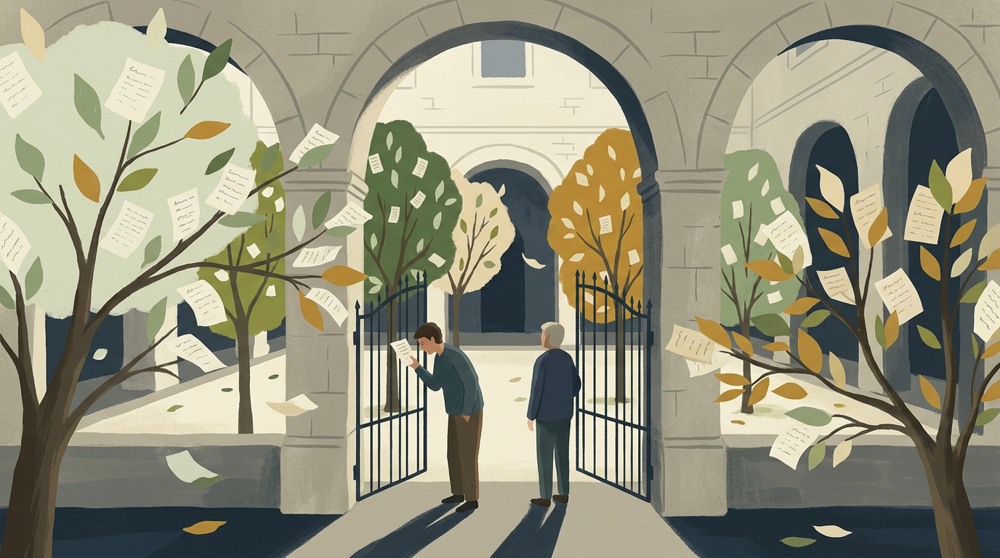

More envelopes came. Some were from people she knew; most were not. A baker who had never thanked his teacher. A boy who had moved away without saying goodbye. A woman who wanted to apologise to her sister and did not know how.
Lina planted all of them. Within a month the courtyard had become an orchard of paper trees, rustling with unsent letters. Neighbours stopped at the gate to read the lower branches.

Some of them cried. Some of them went home and picked up the phone. The orchard, it turned out, was not only a place for words to grow. It was a place where people remembered they could still say them.